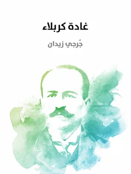

غَادَةُ كرْبَلاء

قراءة عربية أصلية محددة النطاق في الصفحات 9 إلى 14 من ملف PDF المرتبط، وليست تلخيصا كاملا للكتاب. نناقش ما تدعمه هذه المقاطع فقط.
فذلكة تاريخية: قريش بين بني أمية وبني هاشم
يفتتح جرجي زيدان روايته بفذلكة تاريخية عن قريش، قبيلة من عرب الحجاز تتفرع عنها بطون أشهرها عبد مناف، وهو فخذان: بنو أمية وبنو هاشم، وكانت الرياسة لهذين الفخذين، وكان بنو أمية أكثر عددًا ولهم الزعامة في الحرب. فلما جاء الإسلام والنبي من بني هاشم اعتز به الهاشميون، وبقي العز لهم في مكة حتى مات أبو طالب وهاجر بنوه إلى المدينة، فخلا الجو في مكة لبني أمية ورئيسهم أبو سفيان والد معاوية. ولما هُمّ المسلمون بفتح مكة جاءهم أبو سفيان فأسلم وأسلم أولاده. وفي خلافة أبي بكر شكا بنو أمية قلة المناصب فأنفذهم في حروب الردة فأحسنوا الجهاد، ثم بعثهم عمر إلى حرب الروم في الشام فافتتحوها وظل معظمهم فيها، فولي عليها يزيد بن أبي سفيان حتى مات في طاعون عمواس فخلفه أخوه معاوية، وأقره عثمان عليها. فلما قُتل عثمان كان دعاة علي أكثر عددًا لكنهم خليط من قبائل شتى، وكانت أحزاب معاوية كلها من قريش أهل البأس والشدة، فكانت عصبيته أشد وأمضى، حتى قُتل علي سنة ٤٠هـ واضطر الحسن أن يخلع نفسه، فاتفقت الجماعة على بيعة معاوية منتصف سنة ٤١هـ.
زاوية وحدود القراءة
قراءة موجزة من ص ٩ إلى ص ١٤ من أصل ٢١٨ صفحة، تعرض الفصل الأول من الرواية، لا الرواية كاملة.
الطبعة والقراءة
هذه النسخة من الكتاب صادرة ومتاحة مجانًا من مؤسسة هنداوي بشكل قانوني؛ حيث إن نص الكتاب يقع في نطاق الملكية العامة تبعًا لقوانين الملكية الفكرية.
تنزيل PDF المجاني ↓ القراءة والمصدر الرسمي ↗